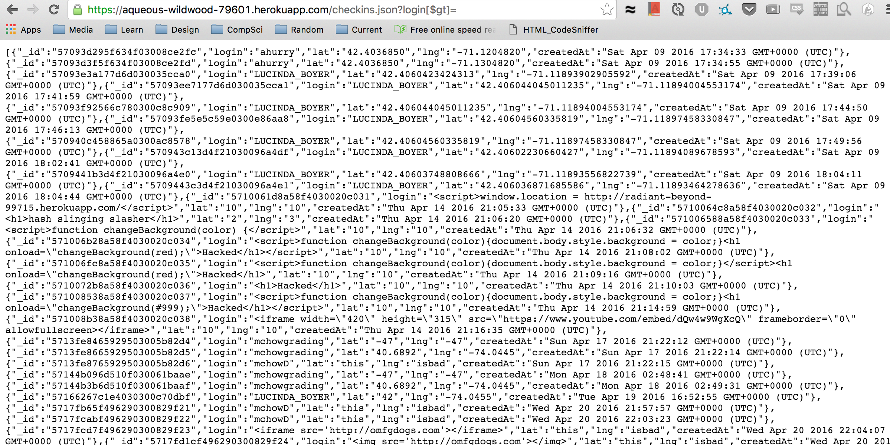

Assignment 4: Security
By: Shreenath Bhanderi
Introduction
For this assignment, I analyzed Aditya Hurry's landmarks server for security and privacy. Aditya's server was tasked with sending and receiving responses with user data including sensitive information such as the location of a user. This server was then used in conjunction with a website to display the locations on a map. This server was set up to only release each users name and location if a client's request contained his or her login and location. Otherwise, oeither only the time a user checked in was shown or the location of a user was given if the request contained the user's name.
In this analysis, I have found three security issues in Aditya's landmarks server and have addressed how to resolve each one.
Methodology
I initially tested the code using the black-box method and reviewed the server source code to look for additional errors. I used my chrome web browser, curl, and shell scripting in my testing.
Abstract of Findings
Most of the vulnerabilities in this code come from inexperience in server security. Sadly, security is often not taught in university programs and many developers come out of college without the knowledge of how vulnerable their web sites and servers are. Aditya used Jade to create the front end of his assignment so many of his inputs were scrubbed for cross site scripting vulnerabilities. However, I was still able to find many ways that a hacker could disrupt the website by taking advantage of the server.
Issues Found
1. Queries allow access to other user's data
- The issue: Affects the GET /checkins.json API
- Where: This problem occurs in the server code when a query is used to get access to certain information.
- Low Risk:the application already allows a person to see other users' locations but if the API were used by someone who was not supposed to have this access, then would become a problem.
- Description: The Mongo search takes in the query as part of a parameter for a search allowing an attacker to add items such $gt to the query for malicious purposes. If the /checkins.json were used by another application, this could be used to find another user's location data for possible malicious purposes. An example of such a query is: "https://aqueous-wildwood-79601.herokuapp.com/checkins.json?login[$gt]=" which works by asking for every login greater than nothing.
- Result:
- 
- Resolution: To resolve this issue, Aditya can simply scrub out any special characters such as '$' before searching the databased with the query.
2. Server crash through invalid queries on Mongo
- The issue: An attacker could crash the server by executing a nonsense request.
- Where: This problem occurs in the server code when a query is an undefined data value.
- High Risk: An attacker could quickly and easily crash the server from a browser window.
- Description: For example, calling https://aqueous-wildwood-79601.herokuapp.com/checkins.json?login[$where]=nonsense on a web browser will crash the server since the query checks for null data but not undefined data. The $where operater can also be used to execute limited javascript on the database which can be used to lock the server or look up sensistive data.
- Result:
-

- Resolution: Aditya can resolve this security issue by scrubbing out any special characters just as he should do for issue 1.
3. Injecting Infinite Data
- The issue: An infinite amount of data can be added to the database, which will cause issues such as crashing a program that uses this api or overloading Mongo/Heroku.
- Where: This problem occurs in the server code.
- High risk: Anybody who knows the right parameters could create a shell script that can cause this issue.
- Description: This issue is caused by teh lack of conditional testing in Aditya's code for how much data is being inserted or how quickly it is being inserted.
- Result:
-


- Resolution: Aditya can patch this issue by limiting the amount of times a user can insert data in a given timeframe. However, a better written bash script could vary the username so a better check might be to limit how many times a certain ip address can insert data.
Conclusion
As demonstrated by the three issues described above, security is something that every developer should be cognizant of because even with apis that come with security features, there are still ways to access secured content. These issues solved above show that although there may be many ways to breach a websites security, the solutions to stop these breaches are not too hard to implement. I can see why Aditya's server may not be fully protected as he had not learned about security beforehand but it scares me to think that many people are coding websites without really understanding security and some of those sites may have private information about me.